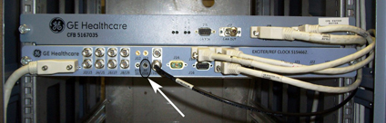
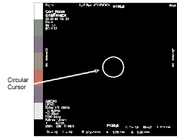

Operating Documentation
Direction 5500113, Rev# 3
Discovery MR750 3.0T Service Methods
Module Version 3.0, Version Date 4/30/09
Operating Documentation |
| Required Persons | Preliminary Reqs | Procedure | Finalization |
|---|---|---|---|
| 1 | Not Applicable | 1 hour | Not Applicable |
Correlated noise is phase and frequency coherent noise sources that correlate to clocks and other digital signals which are generated internal to the magnetic resonance imaging (MRI) system. These noise sources cause undesirable constant frequency lines (noise "zippers"), or bright spot ("hot" pixel cluster) type artifact in MR images. These problems are usually caused by poor screen room integrity or grounding problems. To check the correlated noise, perform the following tests:
Place the Head Coil on the table and landmark as usual.
Place the RF ENABLE switch on the front of the Exciter module in the Disable (down) position to disable transmit radio frequency (RF) output.
Take nine scans with R1=11, 256matrix. Prescribe each scan location as I1000. This will result in the Head Coil moving outside the bore upon starting the scan.
Take nine more scans with R1=7. Prescribe each scan location as I1000.
| NOTE: | The scan range for this 3.0T system is between 127,653,000 and 127,828,000 Hz. |
Take one scan at the magnet frequency with the R1=11, 512 matrix. Then, take one more scan at the magnet frequency with the R1=7, 512 matrix.
Analyze all images for artifacts.
Remove the front panel from the Pen Cabinet.
Disable RF output by placing the RF ENABLE switch on the front of the Exciter module in the Disable (down) position. See Illustration 1.
Illustration 1: RF OUT - Disable/Enable Switch

At the operator work space, prepare the system for a Correlated Noise (256 matrix) scan:
Click [New Pt] and <Enter>.
Id: geservice.
Name: corr noise.
Weight (Lb): 111.
Set [Patient Protocols] to [Service].
Select [Protocol Correlated Noise].
Select [Accept].
Select [Start Exam].
Select [Save Rx].
Click [Save Series] then [Download].
Click on the arrow next to the SCAN button then select [Research], click [Setup Params], and enter settings: R1=11, R2=15, TG=0, [Done].
Click [Manual Prescan], record the current system frequency, and set the system frequency as AX = 127653000 for 3.0T systems or 63764000 for 1.5T systems.
Click [Done] then [Scan].
After the scan is complete, click [Manual Prescan] and increment the system frequency by +25,000 Hz using AX.
| NOTE: | The DX parameter is limited to delta frequency changes of 200 Hz at a time. Therefore, use the AX command to change the value by +25,000 Hz for each new frequency thereafter. |
Click [Done] then [Scan]. Repeat this step eight times. Increment the system frequency by +25,000 Hz each time.
Refer to the Data Sheet  , Correlated Noise Scan Data.
, Correlated Noise Scan Data.
Click on the Active series, from the Rx Manager list, and right click Copy, then Paste. Next click [View Edit]. Click [Save Series].
Click on the arrow next to the SCAN button then select [Research], click [Setup Param], set R1 = 7, and click [Done].
Click [Manual Prescan], then set the system frequency back to AX = 127653000 for 3.0T systems or 63764000 for 1.5T systems.
Click [Done] then [Scan].
After the scan is complete, click [Manual Prescan] and increment the system frequency by +25,000 Hz. Click [Done], then [Scan]. Repeat this step eight times while incrementing the system frequency by +25,000 Hz each time (all at R1 = 7).
| NOTE: | Images must be viewed in an unmagnified format. |
Background Mean and Standard Deviation. Using the Image Browser, measure and record the Mean and Standard Deviation for the first R1=11 image and the first R1=7 image of each image set (both 256 matrix and 512 matrix scans), per the following steps. If you wish, record Mean and Standard Deviation values for the other images.
Position a circular cursor from [Measure] so that it is in the center of the image area. Using the size/shape handle, set the circular size for an area of approximately 1200 mm2 (see Illustration 2).
Illustration 2: Correlated Noise Image

Ensure that zipper and/or bright pixels do not fall within the circle.
Record the mean value  and standard deviation value (SD) displayed on screen in Data Sheet.
and standard deviation value (SD) displayed on screen in Data Sheet. 
Calculate pixel acceptance guidance value: (Pi) limit = + 8 (SD), for first R1=11 and R1=7 256 matrix scans, and for both 512 matrix scans. Record
these four values in the Acceptance Guidelines - Pixels (Pi) column
in the data sheet.
Review all images for any bright spots. View all 20 images.
Adjust window width to 1 and level to pixel acceptance guidance value recorded in data sheet from Step 1.
The image will be flat black; any "hot" pixel clusters will appear white. If the bright spot is a single pixel (temporarily increase the window level a bit to determine this), then it's a random noise value, which can be ignored. If, however, the bright spot is part of a "hot" pixel cluster, then:
First scan "hot" pixels: Make sure that all system cabinet circuit boards are properly seated, and that all circuit board mounting screws are securely tightened (to assure proper grounding), then rerun all scans and repeat analysis steps Step 1 and Step 2.
Second scan "hot" pixels: Set window width to 1, and increase window level until brightest pixel (Pi), in cluster of interest goes black. Record the window level value (Pi) and the pixel location (L, P) in the appropriate data sheet. Repeat the "hot" pixel check/recording for all images.
Review all images for zippers. View all 20 images on the screen. Adjust window level so that any zippers are displayed, but normal noise is not displayed (start at a level setting of 60). Review all images for zippers. If any are detected:
First scan the zippers: Be sure that all system cabinet circuit boards are properly seated and that all circuit board mounting screws are securely tightened (to assure proper grounding), then rerun all scans.
Second scan zippers: If the zippers still exist, continue with Step 4.
Zipper Peak Pixel (Perform if zipper is present in image.)
Set window width to 1.
Increase window level until brightest pixel (PZ), in zipper of interest goes black. Record window level value (PZ) in Data Sheet.
Calculate using measured and (SD) data from appropriate data sheet: + 6 (SD). Record result in appropriate data sheet, Acceptance Guidelines,
PZ column. Check that measured Zipper Peak
Pixel (PZ) is less than or equal to the calculated
guideline.
Calculate using the measured and (SD) data from the appropriate data sheet:
- 6 (SD). Record the result in the
appropriate data sheet, Acceptance Guidelines, PZ column. Verify that the measured Zipper Peak Pixel (PZ) is greater than or equal to the calculated guideline.
Zipper Mean (Perform if the “zipper” is present in the image.)
Position a rectangular box from [Measure] so that it covers only the area (and not beyond) of a zipper (or section of a segmented zipper).
Record the mean value (Z) of the zipper in the data sheet.
Calculate using the measured data from the appropriate data sheet: + 3. Record in the data sheet  Acceptance Guidelines, Z column.
Verify that Zipper Mean ( Z) is less than the calculated guideline.
Acceptance Guidelines, Z column.
Verify that Zipper Mean ( Z) is less than the calculated guideline.
| NOTE: | If the results of the data for "hot" pixels and zippers do not meet the Acceptance Guidelines in the Data Sheet, use the appropriate procedures to troubleshoot the system. |
Set the system frequency back to the nominal value that was recorded in Scan Preparation , Step 4 .
Enable RF output by placing the RF ENABLE switch on the front of the Exciter module in the Enable (up) position. See Illustration 1.